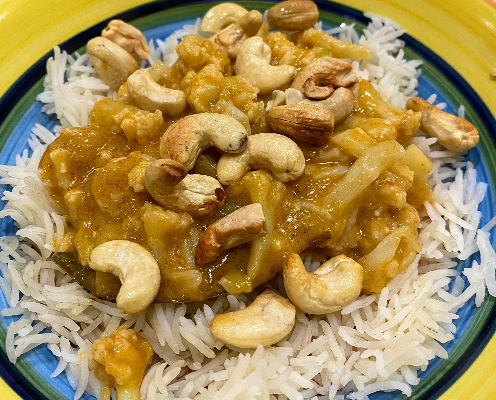

Toasted Cashew Nut & Cauliflower Curry
 Meat
Meat

1 headcauliflower2bay leavessomesalt
Boil cauliflower, bay leaves, and salt for 4 mins
Drain cauliflower
somecoconut oil4spring onions2 tspginger1 tspcumin1 tspcoriander
Heat coconut oil, spring onions, ginger, cumin, and coriander for 1 min
1/4 cupThai red curry paste
Add Thai red curry paste and stir
1 cancoconut cream
Add cauliflower and coconut cream
Allow to simmer for 10 mins, until cauliflower is tender
somecashew nuts
Meanwhile toast cashew nuts in oven
Serve with lime juice, toasted nuts, rice and naan bread